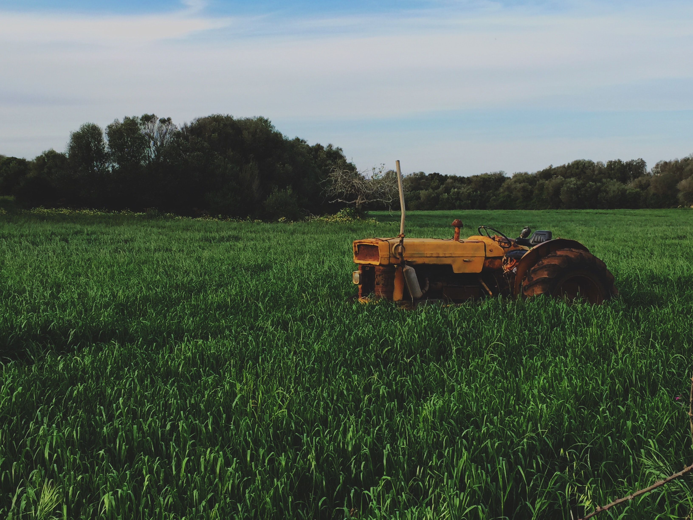

「三七五減租」明定土地的租金不得超過年收穫量的37.5%，大幅降低的佃農耕作的租金負擔；再透過「公地放領」讓農民去獲得政府釋出的空地； 最後實施「耕者有其田」政策， 讓大地主將手中的土地幾乎釋出，只能依照土地生產力來保留，像是良田1.5甲或中等3甲、旱田6甲。
再將其餘田產的市值，換成土地債券和四大國營企業（台泥、台紙、工礦、農林）的股票，希望地主變成企業投資者。 可惜的是，當時許多地主對股票沒有概念，也不知行情，最後只好賤賣。

「土地改革」，
雖然對當時的農業有所改善，不過70年過去了，
環境有了很大改變，但法規、政策仍是70年前那一套思維，
對農業造成不小的影響，
尤其是對青年返鄉務農造成極大阻礙，以下來看幾點重要原因：
1.農地太貴
2.口頭租約